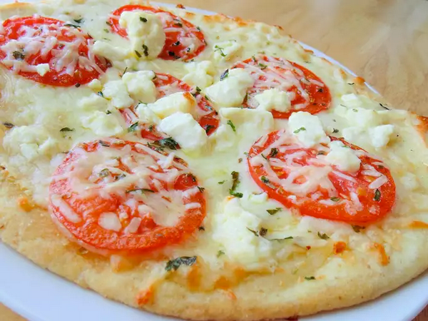

Home
Four Cheese Margherita Pizza

Description
Make a delicious four cheese margherita pizza using mozzarella, feta, fontina, and parmesan cheeses in under 40 minutes! This recipe provides 2 servings and follows an easy 3-step process.
Ingredients
- ¼ cup olive oil
- 1 tablespoon minced garlic
- ½ teaspoon sea salt
- 8 Roma tomatoes, sliced
- 2 (12 inch) pre-baked pizza crusts
- 8 ounces shredded Mozzarella cheese
- 4 ounces shredded Fontina cheese
- 10 fresh basil leaves, washed, dried
- ½ cup freshly grated Parmesan cheese
- ½ cup crumbled feta cheese
Steps
- Stir together olive oil, garlic, and salt; toss with tomatoes, and allow to stand for 15 minutes. Preheat oven to 400 degrees F (200 degrees C).
- Brush each pizza crust with some of the tomato marinade. Sprinkle the pizzas evenly with Mozzarella and Fontina cheeses. Arrange tomatoes overtop, then sprinkle with shredded basil, Parmesan, and feta cheese.
- Bake in preheated oven until the cheese is bubbly and golden brown, about 10 minutes.